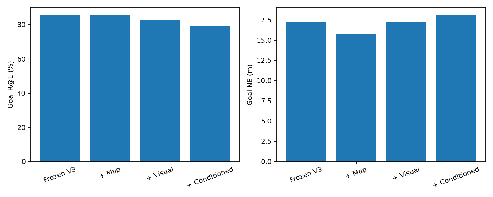
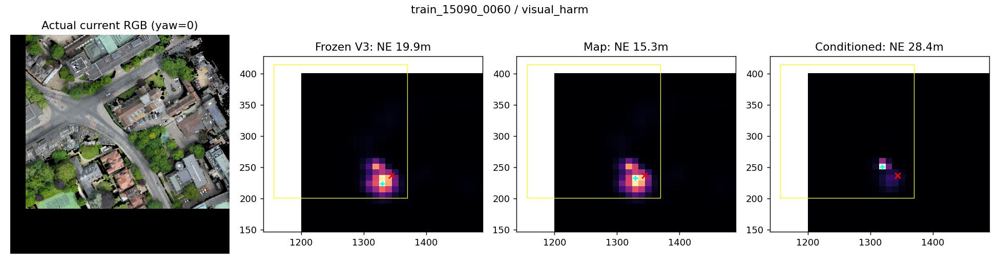
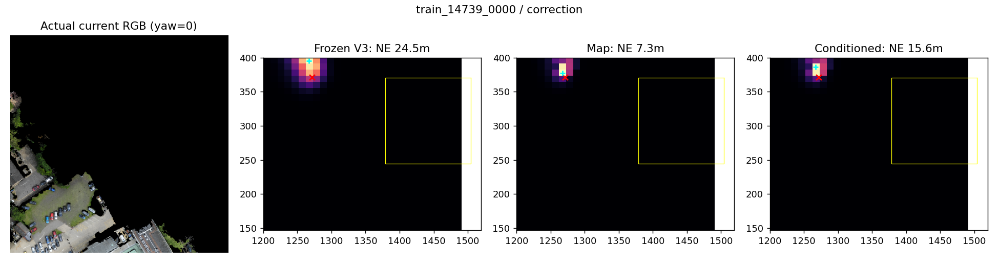
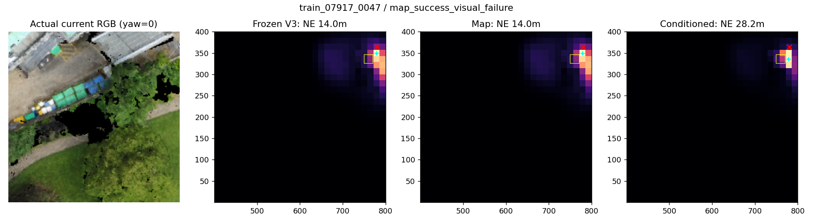

TRAIN开发诊断，不是闭环SR。红叉为事后TRAIN目标，青色为Goal，黄色为Footprint；像素目标身份未知。
中文报告
this is a parking area. There are black and red cars in this area. this area is next to the black triangle and pyramid roofed buildings on the side of the hills road. This area has a black tree on the road side and 3 trees next to it.

Two story White House with a gray roof, that is next to the Regent Street Dental Surgery building off Regent Street near the edge of the map

The building thats back side shares a wall with The Scholars Gaden. It has six green, four blue, and multiple yellow and white bins against the wall behind it as well as a white utility van. The roof has different styles and types beside each other including a round tundra roof a roof of twelve gray squares in a box shape and a light blue green house like roof/ room.
